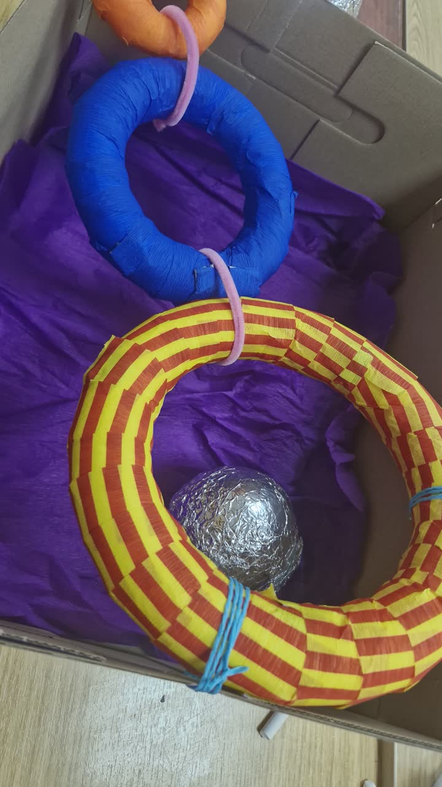

Radovi i primeri / Čas 6 / Prototip igračke
igra sa užetom
Dunja Ljubičić38/24
Dosije: Prototip igračke
Čas 6
2 prikaza rada · Gradivo časa



U rukama korisnika · 06.11.2026.
2 kadrova sa posete udruženju · cela poseta ↗
Ljubičasta kutija čuva obruče i kugle od folije na okupu pri prenošenju u dvorište
ViđenoTri povezana obruča u boji i kugle od aluminijumske folije doneti su u udruženje u sopstvenoj kutiji na tufne obloženoj ljubičastim krep-papirom (kadrovi 11 i 13), čime je rešeno rasipanje slobodnih kuglica primećeno na prethodnoj poseti.
Sledeća probaUčvrstiti obruče na podignuti nosač uz ivicu same kutije kako bi kutija tokom igre služila i kao hvatač bačenih kugli od folije, a ne samo kao ambalaža za prenos.


Ista ruka, ostale nedelje
- igra sa užetom nedelja 5 · 3 slike
- igra sa užetom nedelja 4 · 2 slike